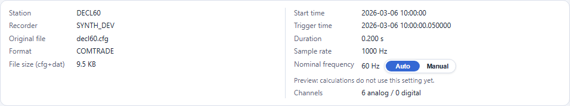
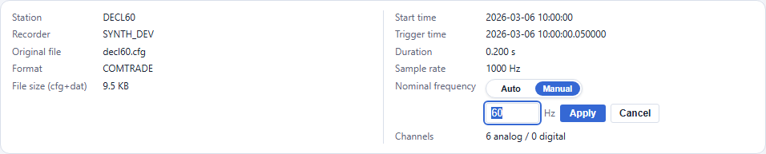
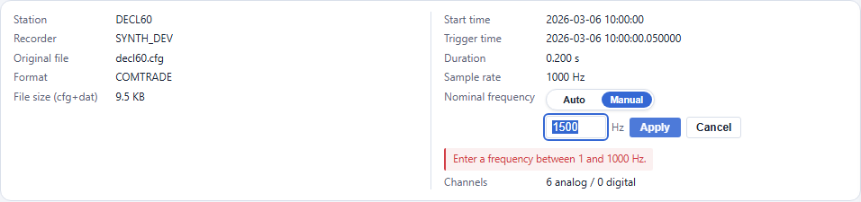
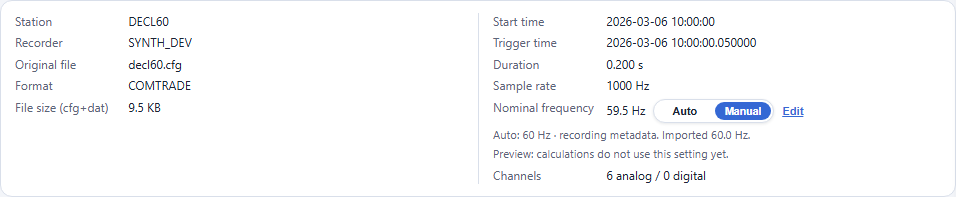
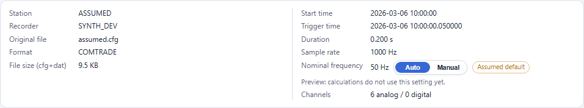
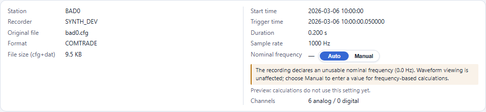
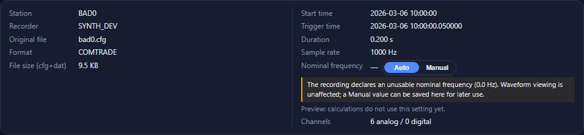
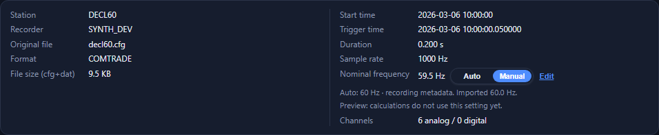
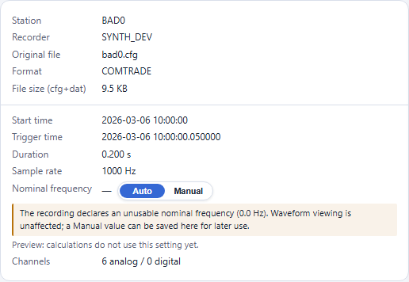

NF-2 — Recording Details nominal-frequency control
Owner visual acceptance sheet. Every screenshot is Recording Info with the release gate switched on in an isolated test run. The gate is off for every normal user; nothing here is released.
Every state carries the line “Preview: calculations do not use this setting yet.” No engineering calculation reads this setting until NF-3.
1–5: light theme





6–9: unusable declared value, dark theme, narrow width




Try it yourself — isolated local preview only
This serves a copy of the frontend whose copy of config.js carries the flag. The checked-in frontend/config.js is never edited. Run each block in its own PowerShell window.
Once, prepare the copy (re-run it to refresh the copy):
$wt = "D:\Programming\oruxa-powerwave\.local-data\nf-2"
$pv = "$env:TEMP\nf2-preview"
New-Item -ItemType Directory -Force "$env:TEMP\nf2-preview-storage" | Out-Null
if (Test-Path $pv) { Remove-Item $pv -Recurse -Force }
Copy-Item "$wt\frontend" $pv -Recurse
Add-Content "$pv\config.js" 'window.POWERWAVE_CONFIG.featureFlags = { nominalFrequencyOverride: true };'
Window 1 — backend (local only, in-memory workspace):
cd "$wt\backend" $env:STORAGE_PATH = "$env:TEMP\nf2-preview-storage" D:\Programming\oruxa-powerwave\backend\.venv\Scripts\python.exe -m uvicorn app.main:create_app --factory --host 127.0.0.1 --port 8000
Window 2 — frontend copy:
python -m http.server 8101 --bind 127.0.0.1 --directory "$env:TEMP\nf2-preview"
Open http://127.0.0.1:8101/index.html, import a recording, then Recording Details → Recording Info → Nominal frequency.
To see the gate off, serve $wt\frontend itself instead (no flag): the row is the original read-only row.
When finished, stop both windows and delete $env:TEMP\nf2-preview. Do not copy the flag line into any tracked file, container, or DEV/PROD setting.